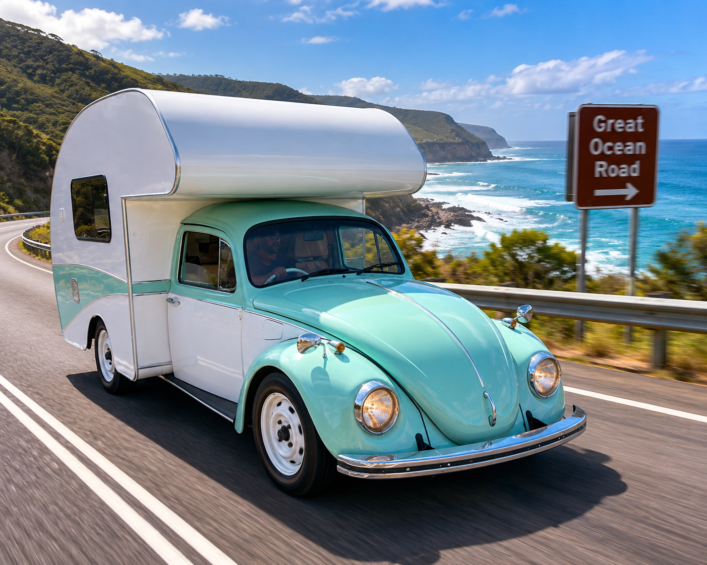
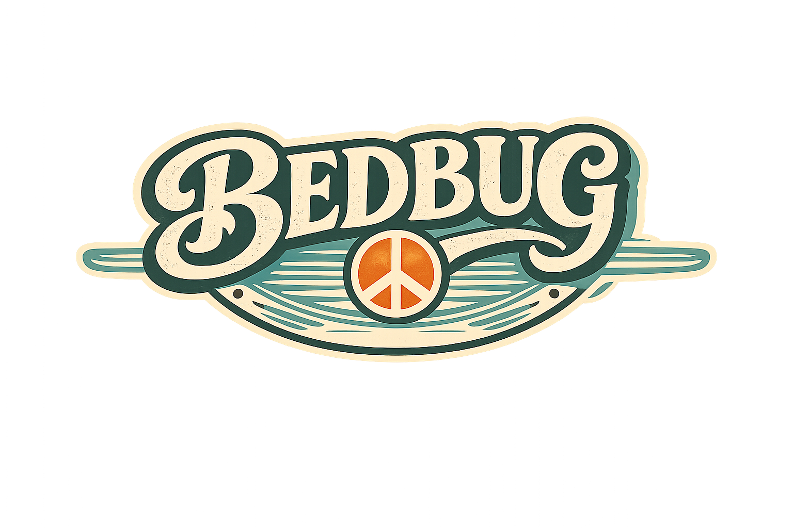
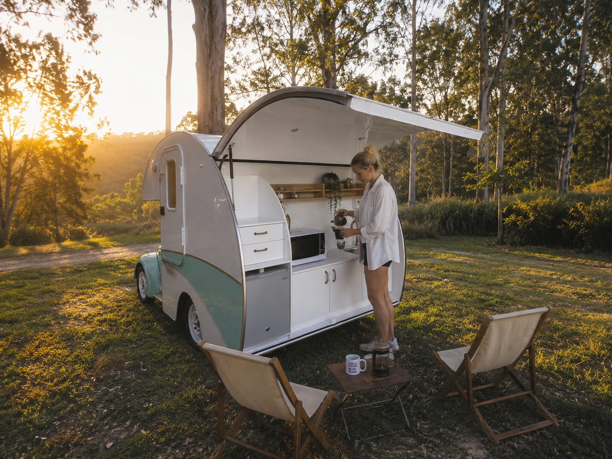

Featured Adventures
BEDBUG is made for quick escapes, coastal road trips and unforgettable weekends.


Great Ocean Road
Scenic drives, ocean views and classic road trip energy.
Explore Road Trips
Vintage style. Modern comfort. Endless adventure. Hire Australia’s most unique retro VW Beetle camper and create your own weekend escape.
Book Your Adventure Explore The BuildFrom beach days and rainforest nights to coffee stops and coastal drives, BEDBUG turns a simple getaway into an unforgettable retro adventure.
Escape the everyday and hit the road. No hotels, no schedules, just you, the open road and wherever the adventure takes you.
Spacious double bed, coffee machine, microwave, running water, 65L fridge and everything you need for a comfortable weekend away.
BEDBUG is not another campervan. It's a custom-built VW Beetle camper that turns heads everywhere it goes and creates unforgettable memories.
BEDBUG is made for quick escapes, coastal road trips and unforgettable weekends.

Scenic drives, ocean views and classic road trip energy.
Explore Road Trips
A classic VW Beetle camper on the outside, modern comfort on the inside. BEDBUG has been purpose-built for unforgettable road trips while retaining all the charm of vintage motoring.